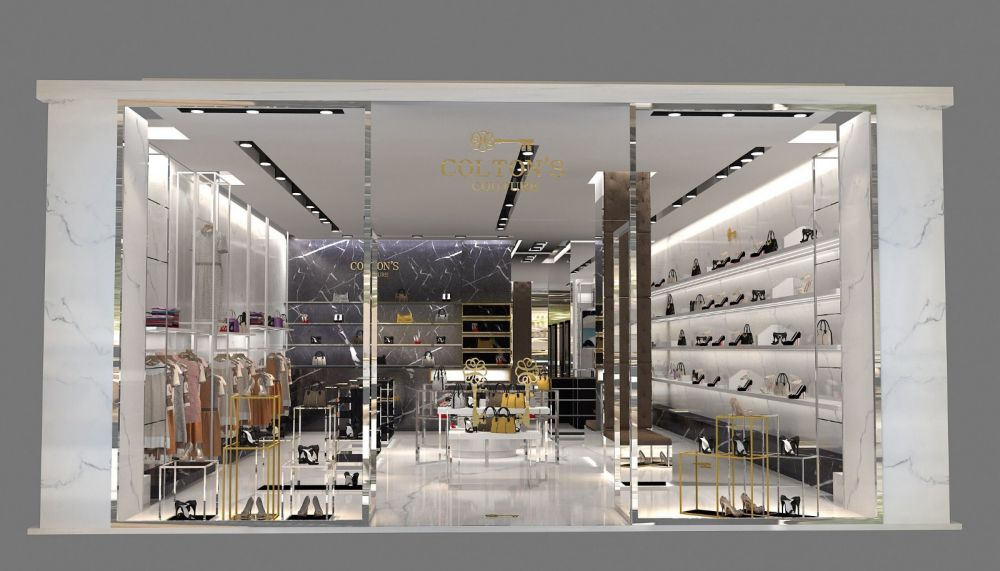
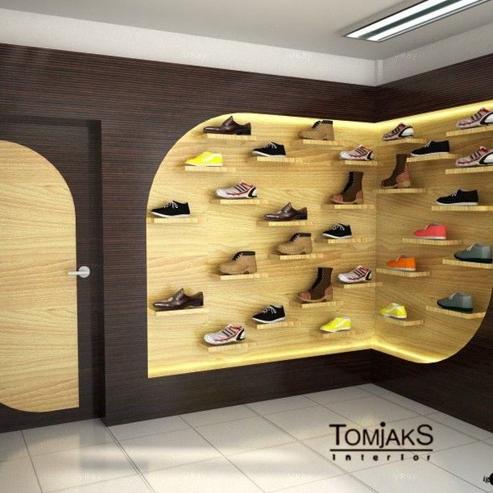
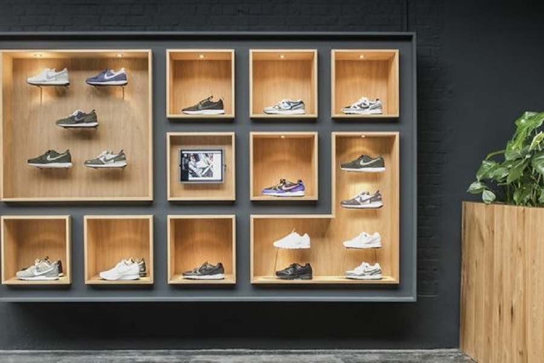
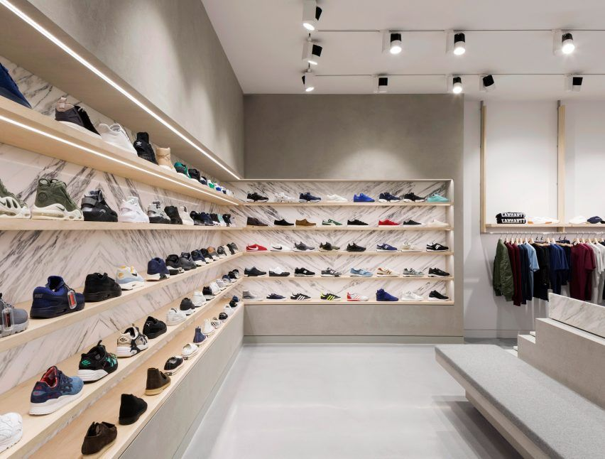
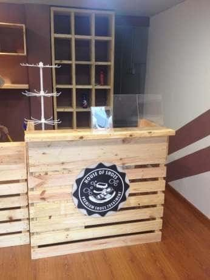

Toko Sepatu Olahraga
Toko sepatu olahraga adalah jenis toko yang khusus menjual sepatu yang dirancang dan di produksi untuk keperuan aktivitas olahraga,
toko ini menyediakan berbagai macam sepatu untuk berbagai jenis olahraga, seperti lari, sepak bola, basket, dan lainnya.
Fokus utamanya adalah memenuhi kebutuhan para pelanggan yang mencari sepatu yang sesuai dengan jenis dan intensitas olahraga yang mereka tekuni.
VISI
- Menjadi destinasi utama bagi para pecinta olahraga dalam memenuhi kebutuhan sepatu yang inovatif, fungsional, dan berkualitas tinggi,
sehingga mendorong gaya hidup sehat dan aktif.
MISI
- Menyediakan rangkaian produk sepatu olahraga terkini dan terkemuka untuk memenuhi berbagai kebutuhan dan preferensi pelanggan
- Memberikan pelayanan pelanggan yang unggul dengan pengetahuan staf yang kompeten untuk membantu pelanggan memilih sepatu yang sesuai
- Menawarkan pengalaman belanja yang nyaman dan menarik melalui desain interior yang ramah pelanggan dan tata letak yang efisien
- Menjalin kemitraan dengan merek-merek terkemuka dalam industri untuk menyediakan produk berkualitas tinggi dan inovatif
- Mendukung komunitas olahraga lokal melalui sponsorship, program kesehatan, dan aktivitas yang mempromosikan gaya hidup aktif
Tujuan
- Mendukung Performa Olahraga, yaitu Menyediakan sepatu olahraga berkualitas tinggi yang di rancang khusus untuk meningkatkan performa atlet atau hobi olahraga
- Kenyamanan Pelanggan, yaitu memastikan kenyamanan pelanggan dengan menawarkan beragam pilihan sepatu yang sesuai dengan bentuk kaki dan preferensi individu
- Inovasi dan Kualitas, yaitu menyediakan produk inovatif dan berkualita tinggi agar pelanggan dapat merasakan manfaat teknologi terbaru dalam desain sepatu olahraga
- Desain dan Gaya, yaitu Menawarkan berbagai desain dan gaya sepatu olahraga untuk memenuhi preferensi mode pelanggan selain hanya fokus pada kinerja
- Kualitas produk, yaitu menawarkan sepatu olahraga berkualitas tinggi dengan fitur inovatif dan desain yang mendukung performa dan kenyamanan selama kegiatan olahraga
- Harga Bersaing, yaitu menawarkan harga yang kompetitif untuk produk-produk berkualitas guna memberikan nilai tambah kepada pelanggan





Tokoh Sepatu olaraga
- Sepatu olahraga adalah alas kaki desain khusus untuk aktivitas fisik, memberikan perlidungan dan kenyamana saat berolahraga
- karena adanya sepatu olahraga, orang-orang dapat berpastisipasi dalam aktivitas fisik dengan lebih nyaman, dan meningkatkan performa atletik
- Olahraga dapat menambah kebugaran tubuh karena dapat meningkatkan daya tahan, kekuatan otot,dan fleksibilitas
- Olahraga memberikan manfaat kesehatan fisik dan mental, dan mengurangi risiko penyakit kronis
Prasarana Perpustakaan
| No. |
Hari |
Jenis Sepatu |
Stok |
| 1 |
senin |
Sepatu Lari |
96 |
| 2 |
Selasa |
Sepatu Balet |
40 |
| 3 |
Rabu |
Sepatu Futsal |
30 |
| 4 |
Kamis |
Sepatu Sneakers |
100 |
| 5 |
Jum'a |
Sepatu Bola |
80 |